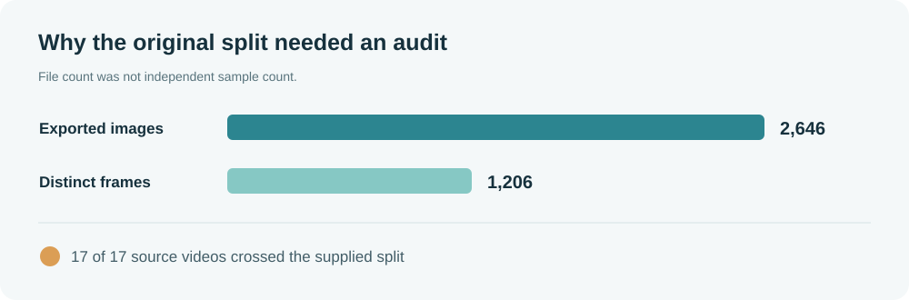
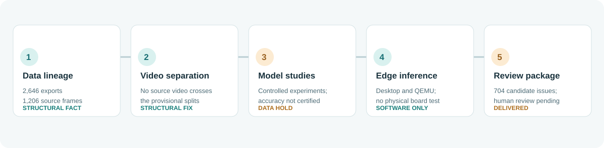

Video provenance
2,646 exports traced to 1,206 distinct frames from 17 videos. All 17 videos crossed the supplied split.
LABUST collaboration · FER, University of Zagreb · July–September 2026
A remote underwater-vision collaboration became an investigation of data lineage, evaluation leakage, and what a model result can honestly mean.
A defensible foundation.
Data-lineage audit, video-separated evaluation, a software edge-inference prototype, and a reviewable handoff. Physical ROV deployment remained untested.
LABUST collaboration · FER, University of Zagreb01 / THE RESEARCH TURN
The work began with model transfer to outdoor underwater imagery. Before claiming improvement, we traced image exports to their source videos. That check changed the interpretation of the original evaluation: files from the same recordings appeared in both training and evaluation.
We then created video-separated development splits and ran bounded experiments. Later visual inspection exposed a second limit—image orientation and annotations were not yet reliable enough for a final model-quality claim. The right endpoint was therefore a review workflow, not another headline score.
Read the full project sequence
02 / THE WORKFLOW
Each step answers a narrower question than the one after it. A clean split cannot certify labels; a running binary cannot certify field performance.

03 / THE EVIDENCE
2,646 exports traced to 1,206 distinct frames from 17 videos. All 17 videos crossed the supplied split.
NCNN/C++ inference, ARM builds, desktop stability and emulated-ARM checks. No physical-board or ROV benchmark.
The final package queued 704 candidate issues across 636 frames. It did not approve corrections.
04 / REPRODUCE A PIECE
The public tool needs only the export filenames from the publisher's dataset. It does not read image bytes, upload media, or alter source files.
Reproduction guidepython3 tools/audit_export.py /path/to/extracted
python3 -m unittest discover -s tests -v